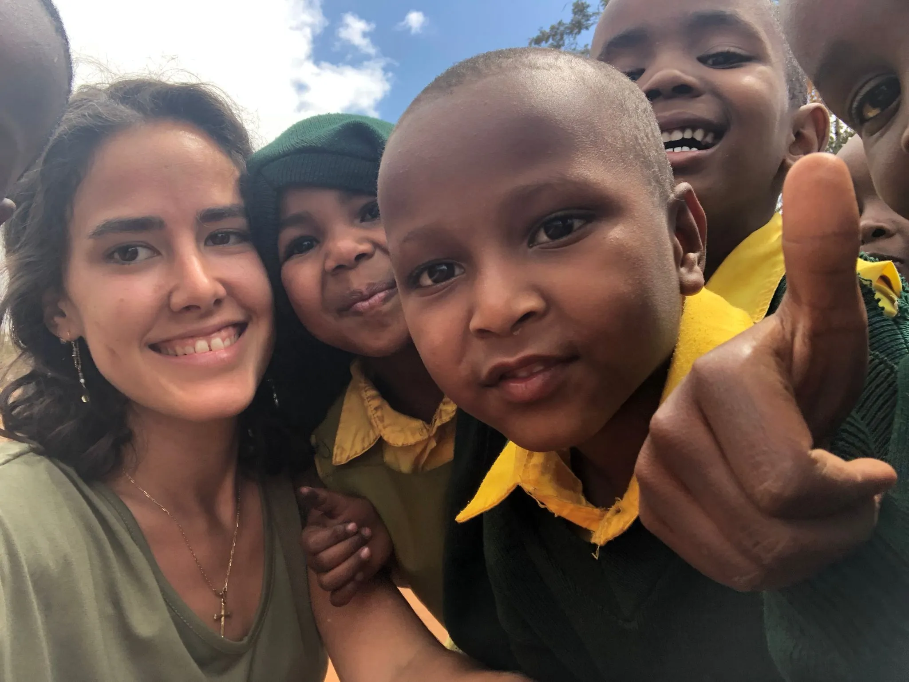
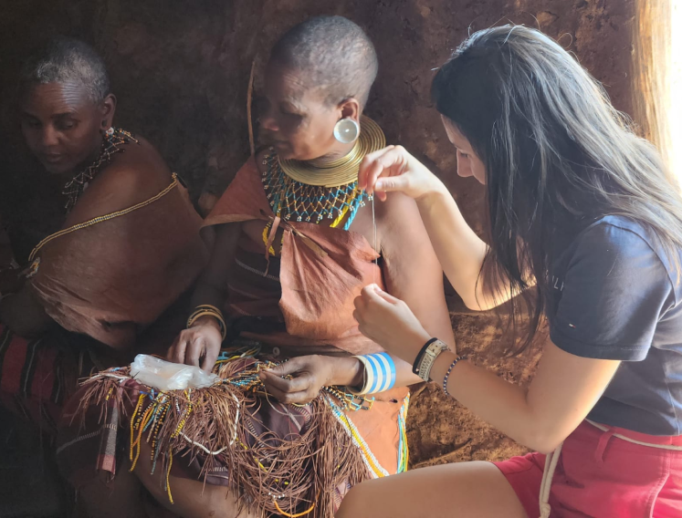

ROMPER LAS BARRERAS CULTURALES
Esta organización sin ánimo de lucro está registrada oficialmente en Tanzania

7.9m
Mujeres y niñas que viven en Tanzania han sido sometidas a la mutilación genital.
37%
De las niñas en Tanzania se casan antes de cumplir los 18 años de edad.

¿COMO AYUDAR?
Puedes participar en nuestro proyecto en cualquiera de las áreas en las que trabajamos. Se te brindará todo el apoyo que necesites para realizar las actividades que se acuerden.
MAYOR INFORMACION